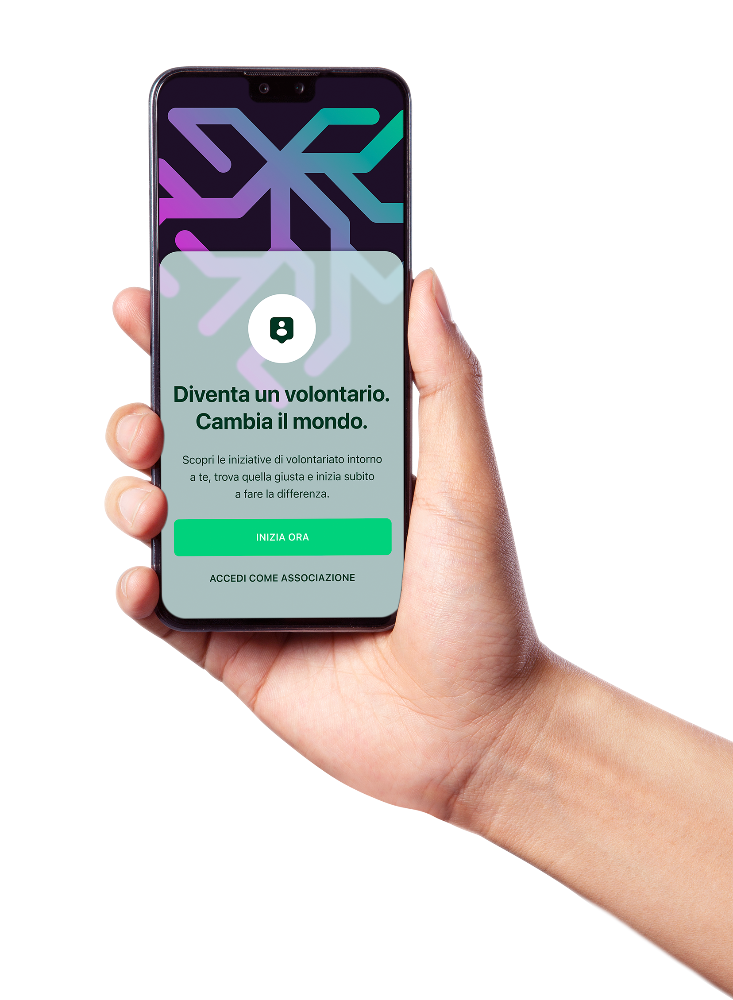
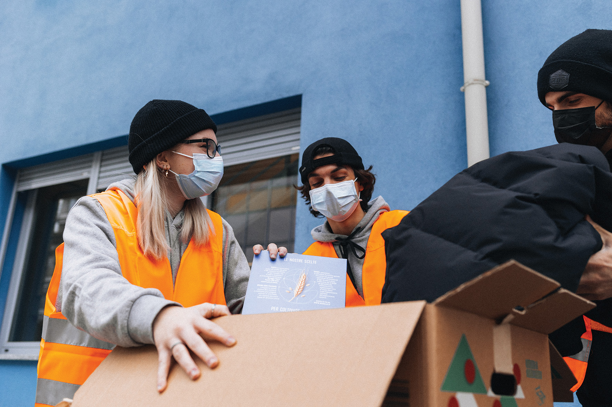
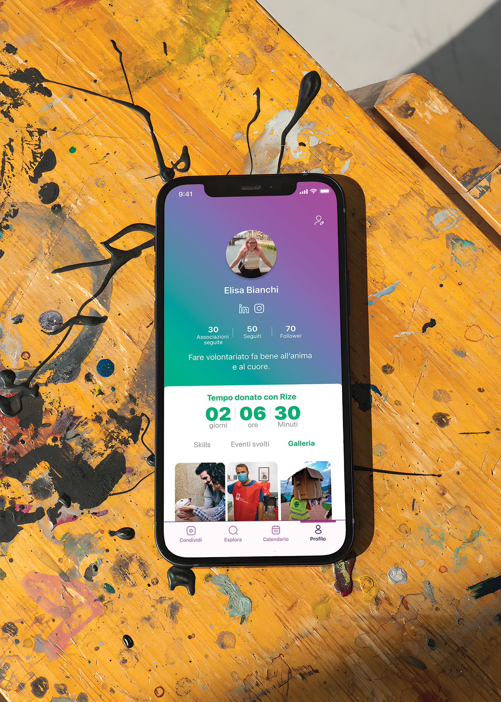
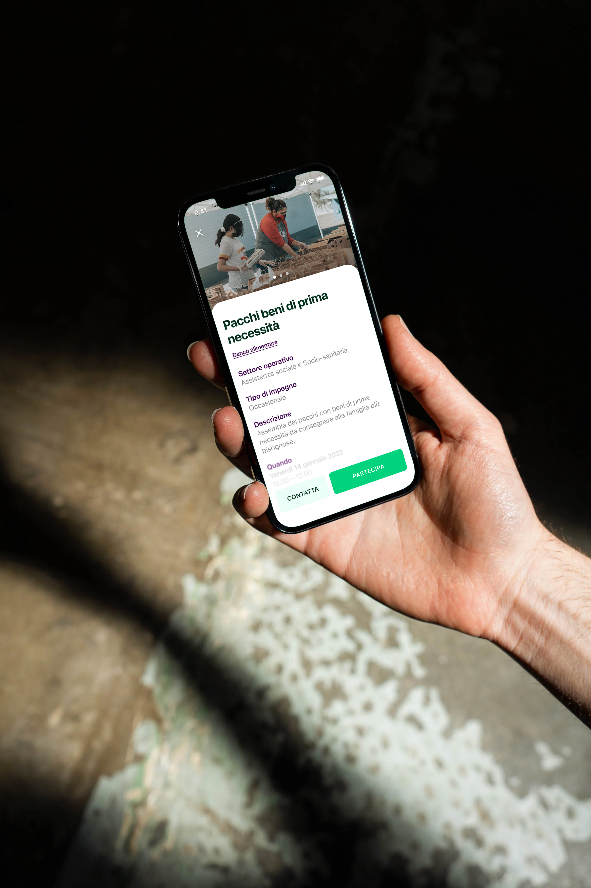
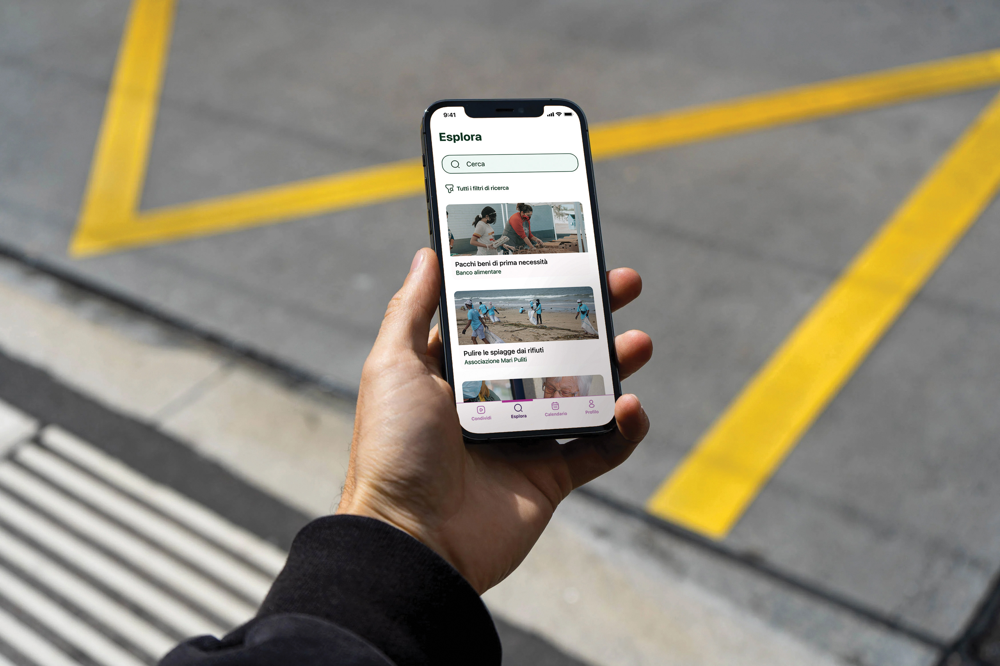

Rize
2022
2022
UX and UI design
System design
System design
Rize - simplifying volunteering
Rize is a platform designed to make volunteering more accessible and
streamlined. By aggregating opportunities from various organizations,
it offers users a centralized hub where they can easily find and sign
up for events based on their interests, availability, and location.
With just a few clicks, users can explore meaningful opportunities
that align with their passions, making the process of giving back more
convenient than ever.


Volunteering isn’t just about helping others—it’s also about building
connections. Rize integrates social features that allow users to share
their volunteering experiences and discover new opportunities through
their network. By seeing what friends and others in the community are
involved in, users can join events that resonate with them, fostering
a sense of camaraderie and collective action. This social approach
enhances the experience by making volunteering not only impactful but
also more engaging and enjoyable.

Certifying skills
Rize does more than connect users to volunteer opportunities—it helps
track and validate their impact. Through a LinkedIn partnership, Rize
certifies volunteering hours and skills via blockchain. This secure
verification enhances volunteers' resumes, making their contributions
professionally valuable while fostering personal growth and community
impact.


Rize makes volunteering easy, social, and impactful. By centralizing
opportunities, connecting users, and certifying skills with LinkedIn,
it empowers meaningful contributions while enhancing personal and
professional growth.


Team
Clara Di Bella / Giorgia Maggiolini / Giovanni Malausa / Paola Rapino / Francesco Scarfone / Matteo Semeraro